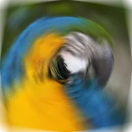

Draaivervaging

Vervaagt de laag in cirkels rond een punt, alsof hij ronddraait.
Instellingen
| Instelling | Type | Bereik | Standaard |
|---|---|---|---|
| Midden | Punt (X, Y) | -1 tot 2 | 0.5, 0.5 |
| Hoek | Hoek | 0° tot 360° | 5° |
| Stijl | Keuze | Klassiek, Standaard | Standaard |

Vervaagt de laag in cirkels rond een punt, alsof hij ronddraait.
| Instelling | Type | Bereik | Standaard |
|---|---|---|---|
| Midden | Punt (X, Y) | -1 tot 2 | 0.5, 0.5 |
| Hoek | Hoek | 0° tot 360° | 5° |
| Stijl | Keuze | Klassiek, Standaard | Standaard |